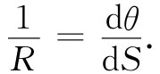
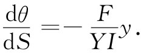

图38-16 一根弯曲的梁
现在要用我们关于梁的理论来理解有关梁或者柱和棒弯折的道理。考虑示意图38-16中所表示的情况，一根原来是直的棒，在其两端受一对反向力所推压而保持弯曲的形状。我们想要计算这根棒的形状以及作用于两端的力的大小 。
图38-16 一根弯曲的梁
令棒与两端之间直线的偏离为y（x），其中x为距一端的距离。在图中P点的弯曲转矩 等于力F乘以力臂，即垂直距离y，
利用关于梁的方程式（38.36），便有
对于小偏离来说，可以取1/R=-d2 y/dx2 （负号来源于向下弯曲）。我们就得到
（38.45）
这是正弦波的微分方程。因而对于小 的偏离，这样一根被弯曲的梁其曲线为正弦曲线。这正弦波的“波长”λ为两端间距离L的两倍。若弯曲程度很小，则这正好是棒未被弯曲时长度的两倍。因而该曲线为
y=Ksinπx/L.
对此式取二次微商，便得

将其同式（38.45）比较，可以看到力为
（38.46）
对于微小弯曲来说，力与弯曲位移y无关 ！
这样，在物理上就有下述情况，如果力小于式（38.46）所给出的F，则根本就没有什么弯曲。但如果稍微大于 这个力，则材料将突然严重弯曲——这就是说，对于超过这一临界力π2 YI/L2 （常称为“欧拉力”）的那些力，梁将“弯折”。如果一座建筑物的楼上的负载超过了支柱的欧拉力，则该建筑物将倒塌。另一个显示这种弯折力最重要的地方是在太空火箭上。一方面，火箭必须在发射台上能够支持它本身的重量并在加速期间能够经得起那些应力；另一方面，重要的是把结构的重量保持极小，以便使有效负载和燃料容量尽可能地大。
事实上，当力超过欧拉力时，梁未必就完全坍缩下来。当位移变大时，力会大于上面所求得的力，因为我们曾略去了式（38.38）有关1/R中的一些项。为要求得梁严重弯曲时的力，就必须回到准确的方程式（38.44）上去，它是在我们采用有关R与y间的近似关系前就已经得到的。式（38.44）具有一种相当简单的几何性质 [3] ，要把它算出来稍微有点复杂，但却是相当重要的。不用x和y来描述该曲线，我们可以用两个新的变数：S，即沿曲线的距离；θ，即该曲线的切线的倾角。参阅图38-17。曲率就是该角随距离的变化率：

因此，我们能够将那个准确的方程（38.44）写成

如果取上式对于S的微商并用sinθ代替dy/dS，则我们得

［如果θ很小，便会回到式（38.45）。一切都行了］。
图38-17 关于一根弯曲梁的曲线坐标S和θ
现在，当你知道式（38.47）刚好就是你所获得的关于摆作大幅度振动的方程式时——当然，其中F/（YI）要用另一个常数来代替，你或许会感到喜悦或者不高兴。我们早就在第1卷第9章中学习过如何通过数值计算来求解这样的方程 [4] 。你所得到的解答就是某些令人神往的曲线——称为“弹性”曲线。图38-18显示对于不同F/（YI）值的三条曲线。
图38-18 一根弯曲棒的曲线
[1] 原图中箭头方向有误，已改正。
[2] 当然，那实际上就是单位面积具有单位质量的一个薄片的转动惯量。
[3] 偶尔，同一个方程也出现在其他的物理情况中——例如，在两块平行平面之间所包含液体的弯月面——而同样的几何解答可以通用。
[4] 这些解也可用称为“雅可比椭圆函数”的一些函数来表示，这些也已被某些人算出来了。